Chapter 1
Introduction
Adapted from J. F. Kurose and K. W. Ross, Computer Networking: A Top-Down Approach, 8th edition, Pearson, 2020. Slide material copyright 1996–2020 J. F. Kurose and K. W. Ross. Additional framing from Peterson & Davie, Computer Networks: A Systems Approach, and Rutgers CS 552.
Warm-Up: One Click
You type tamusa.edu and press Enter. The page appears in about a second.
Vote — how many separate machines had to cooperate?
A. Just 2 — mine and theirs
B. About 5
C. 15 to 30
D. Hundreds
Warm-Up: One Click
C or D, depending on how you count. A single page load typically touches:
- a DNS resolver, plus the root,
.edu, andtamusa.eduname servers - 10–20 routers between here and the server
- a load balancer, one or more web servers, a database
- a CDN edge node that may serve the images from Dallas, not from campus
Every one of them followed rules written down years ago by people who have never met. That is what this course is about.
Warm-Up: Two Cables
You must move a 1 TB dataset to a collaborator 3,000 km away.
Vote — which link finishes first?
A. 10 Gbps fiber, 15 ms one-way
B. 100 Mbps link, 1 ms one-way
A, by a factor of 100. For a big transfer, only the rate matters.
Now make it a 1 KB chat message instead. Now B wins, and the rate is irrelevant.
“Fast” is two different quantities — throughput and delay — and they trade off against each other. Section 1.4.
Warm-Up: Busy Signal
Landline telephones used to give you a busy signal when the network was full. Your video call today gets choppy instead.
Vote — which behaviour is better engineering?
A. Busy signal — refuse, or work perfectly
B. Choppy — degrade, but let everyone in
Neither is “right.” They are circuit switching and packet switching, and the Internet bet everything on B. Section 1.3 explains why that bet paid off.
Where This Chapter Goes
Goal: get the feel, the big picture, and the vocabulary. Depth comes in Chapters 2–8. Approach: use the Internet as the running example.
- 1.1 What is the Internet? What is a protocol?
- 1.2 Network edge: hosts, access networks, physical media
- 1.3 Network core: packet vs circuit switching, structure
- 1.4 Performance: delay, loss, throughput
- 1.5 Protocol layers and service models
- 1.6 Networks under attack
- 1.7 History
Section 1.1
What Is the Internet?
Today’s Plan
- Two views of the Internet
- the “nuts and bolts” view — what it is made of
- the “service” view — what it does for you
- Hosts, links, packet switches, networks, ISPs
- What a protocol is, and who writes them
Nuts and Bolts
Billions of connected devices: hosts = end systems, running network apps at the Internet’s edge.
Packet switches: forward packets (chunks of data) — routers and switches.
Communication links: fiber, copper, radio, satellite. Transmission rate = bandwidth.
Networks: a collection of devices, routers, and links managed by one organization.
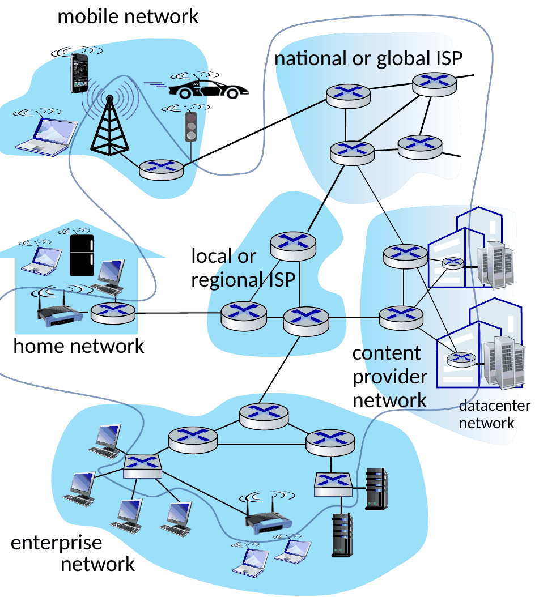
Nuts and Bolts
The Internet is a network of networks: interconnected ISPs.
Protocols are everywhere. They control the sending and receiving of messages: HTTP, TCP, IP, Wi-Fi, 4G, Ethernet.
Internet standards are public documents:
- RFC — Request for Comments
- IETF — Internet Engineering Task Force
No company owns the Internet.
The Service View
Instead of asking what the Internet is, ask what it provides.
Infrastructure that provides services to applications: the Web, streaming video, teleconferencing, email, games, e-commerce, social media, connected appliances.
A programming interface to distributed applications: “hooks” that let a sending app connect to, and use, the Internet’s transport service.
Like a postal service, it offers service options — and, like the postal service, it makes no promise that any one letter arrives.
Fun Connected Devices
- Internet refrigerator, web-enabled toaster, IP picture frame
- Fitbit, AR headsets, sensorized mattress
- Amazon Echo, security cameras, smart thermostats
- Tweet-a-watt energy monitor
- Pacemaker and monitor
Which of these worries you most, and why?
Every device on this list speaks the same protocols we will study. A bug in TCP is a bug in your thermostat and in the pacemaker.
Your Turn: Name It
Classify each item as host, link, packet switch, or network.
| Item | Answer |
|---|---|
| Your laptop | host |
| The campus Wi-Fi access point | packet switch |
| A Cat-6 Ethernet cable | link |
tamusa.edu’s web server |
host |
| AT&T’s backbone | network |
| A geostationary satellite hop | link |
What’s a Protocol?
Human protocols:
- “What’s the time?” “I have a question.” introductions
- … specific messages sent
- … specific actions taken when a message is received
Network protocols: the same idea, but the parties are machines. All communication activity in the Internet is governed by protocols.
What’s a Protocol?
Definition
A protocol defines the format and order of messages exchanged among network entities, and the actions taken on message transmission and receipt.
So three things must be pinned down for every protocol in this course:
- What may be said — the message format.
- When it may be said — the ordering rules.
- What to do on receipt, and on silence.
A Protocol You Already Use
Human
- “Hi”
- “Hi”
- “Got the time?”
- “2:00”
TCP + HTTP
- TCP connection request
- TCP connection response
GET http://gaia.cs.umass.edu/<file>
Same shape: greet, establish, request, respond. The difference is that a machine cannot improvise when the other side says something unexpected — so the rules must be written down exactly.
Activity: Design a Protocol
In pairs — 6 minutes
Design a protocol for a vending machine and a phone paying for a drink. Write down:
- the messages (names and fields), in order
- what each side does on receiving each message
- what happens if a message is lost
Then we build one together — and find the bug in it.
A First Attempt
Four messages, in order:
| # | Message | From | Fields |
|---|---|---|---|
| 1 | SELECT |
phone | slot |
| 2 | PRICE |
machine | slot, amount |
| 3 | PAY |
phone | slot, amount, card_token |
| 4 | DISPENSED |
machine | slot |
On loss: the phone re-sends PAY if no DISPENSED arrives within five seconds.
Where It Breaks
The machine charges the card, turns the motor, drops the drink — and its DISPENSED message is lost.
Vote — what does the phone do next, and what does it cost?
The timer fires, so the phone re-sends PAY. The machine cannot tell a retransmission from a new purchase, so it charges again — and may drop a second drink.
Where It Breaks
The message that went missing was the acknowledgement, not the request.
So the retransmission you added to protect the request is the thing that does the damage.
Nobody designs that bug on purpose. It arrives free with any protocol that retries.
Naming the Transaction
Make PAY idempotent: handling it twice has the same effect as handling it once.
- The phone picks a fresh
txidper purchase, and puts the same one on every retransmission of it.
DISPENSEDechoes thetxid, so a reply can be matched to an attempt.
- The machine keeps a table of completed
txids. On a repeat it does not charge — it re-sends the storedDISPENSED.
A retransmission now costs a duplicate message, never a duplicate charge.
What You Just Invented
Sequence numbers. A txid plus a set of completed ones is duplicate detection — and echoing it in the reply is exactly why an acknowledgement carries a sequence number. Chapter 3.
A retransmission timer. Too short and you flood the machine with spurious retries; too long and the user decides it is broken and walks away.
What You Just Invented
A limit on what is achievable. Exactly-once delivery over a lossy link is not attainable. The honest guarantee is at-least-once delivery plus idempotent handling.
Which is why a real protocol also needs a give-up bound — five tries, then stop — and a refund path.
And whose protocol breaks if the phone dies right after sending PAY?
No txid survives, so the machine’s table has to be the durable side. That is why servers keep the state and clients do the retrying, not the other way round.
Section 1.2
The Network Edge
Today’s Plan
- Where the edge stops and the core begins
- Access networks
- cable (HFC), DSL, home, wireless, enterprise
- the two questions to ask about any access network
- Hosts sending packets: \(L\), \(R\), and \(L/R\)
- Physical media: guided and unguided
A Closer Look
Network edge:
- hosts: clients and servers
- servers often live in data centers
Access networks, physical media: the wired and wireless links that attach a host to its first router.
Network core: interconnected routers — the network of networks.
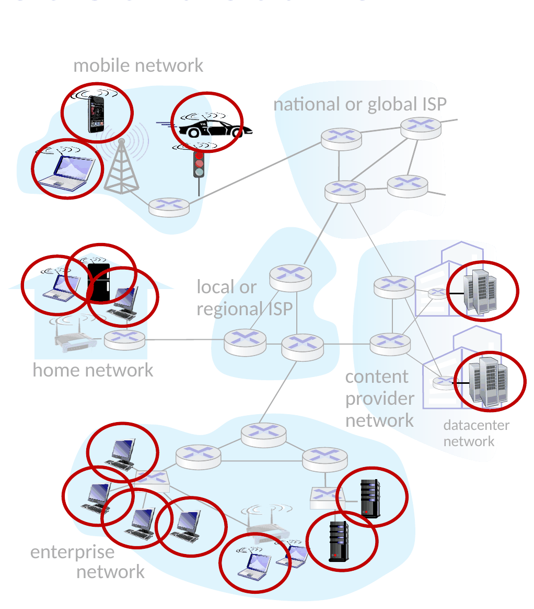
Access Networks
Q: How do we connect an end system to its edge router?
- residential access networks
- institutional access networks
- mobile access networks (Wi-Fi, 4G/5G)
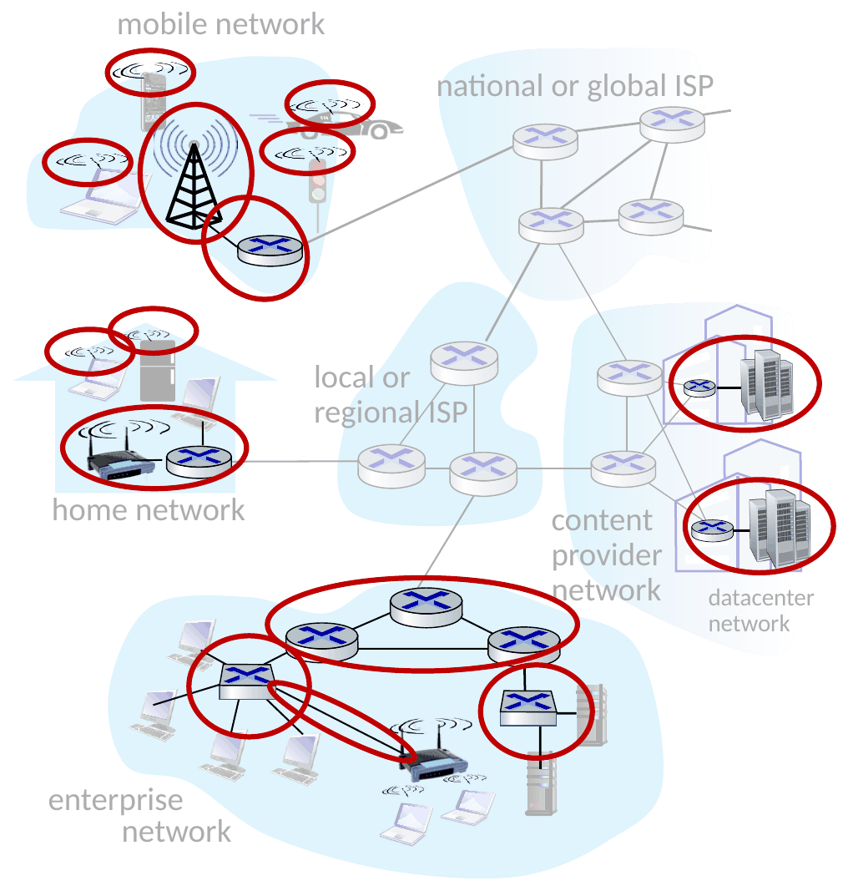
Access Networks
Whatever the technology, the same two questions decide how it feels to use:
Ask of every access network
- What is the transmission rate, in bits/sec?
- Is access shared with the neighbours, or dedicated to you?
Hold on to question 2. It is the difference between a rate you can count on and a rate you can only hope for.
Cable Access: HFC
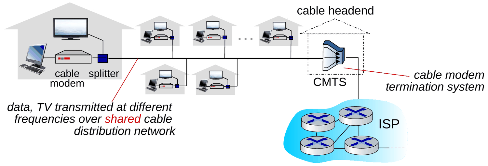
- HFC: hybrid fiber coax. Cable and fiber attach homes to the ISP router.
- Asymmetric: 40 Mbps–1.2 Gbps downstream, 30–100 Mbps upstream.
- Frequency division multiplexing: data and TV ride different frequency bands on the same cable.
Cable: Shared or Not?
Homes on a street share one coaxial distribution network back to the cable headend.
Vote — your neighbour starts a 4K download. What happens to you?
A. Nothing — I have my own line
B. My speed drops
B. Cable is a shared access network. This is exactly why cable slows down at 8 p.m. and why your advertised rate is “up to.”
DSL Access
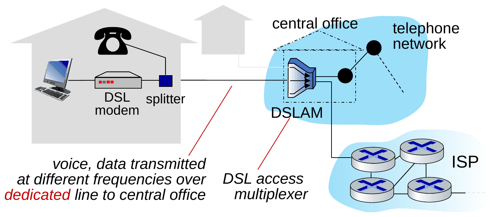
- Uses the existing telephone line to the central office DSLAM.
- Data to the Internet, voice to the telephone network — different frequencies on one pair.
- 24–52 Mbps down, 3.5–16 Mbps up, dedicated to your line.
Home Networks
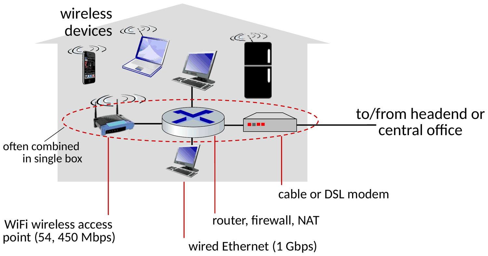
The “router” in your closet is really four devices in one box: cable or DSL modem, router, firewall/NAT, and Wi-Fi access point.
Wireless Access
Wireless LAN (WLAN)
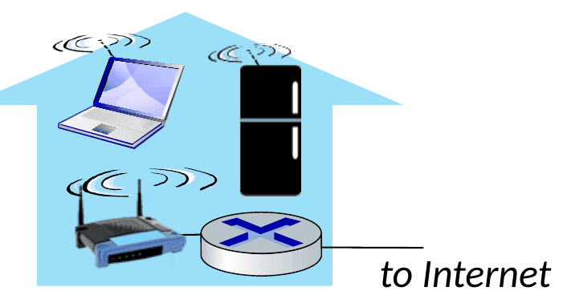
- within a building, ~100 ft
- 802.11 (Wi-Fi): 11, 54, 450 Mbps
Wide-area cellular
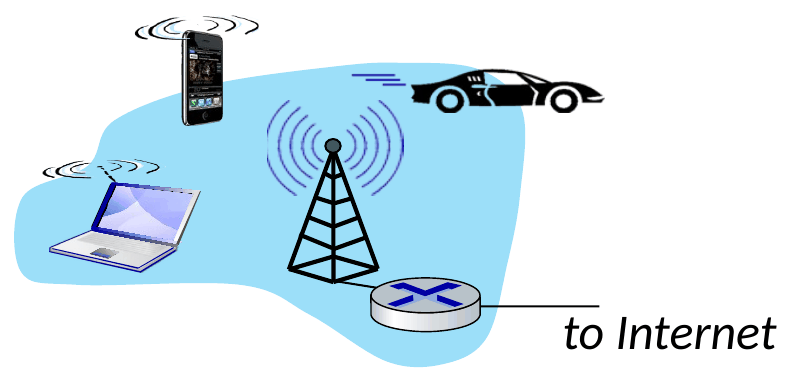
- operator-run, tens of km
- 4G: tens of Mbps; 5G higher
Both are shared: one base station’s capacity splits among everyone attached.
Enterprise Access
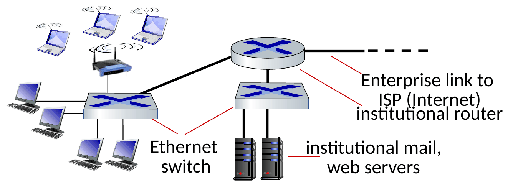
- Companies and universities mix wired and wireless.
- Ethernet: 100 Mbps, 1 Gbps, 10 Gbps wired.
- Wi-Fi: access points at 11, 54, 450 Mbps.
- Switches and routers — the distinction comes in Chapter 6.
Hosts Send Packets
A sending host:
- takes an application message
- breaks it into packets of \(L\) bits
- pushes each packet into the link at transmission rate \(R\)
\(R\) is also called link capacity or link bandwidth.
\[d_{\text{trans}} \;=\; \frac{L \text{ (bits)}}{R \text{ (bits/sec)}}\]
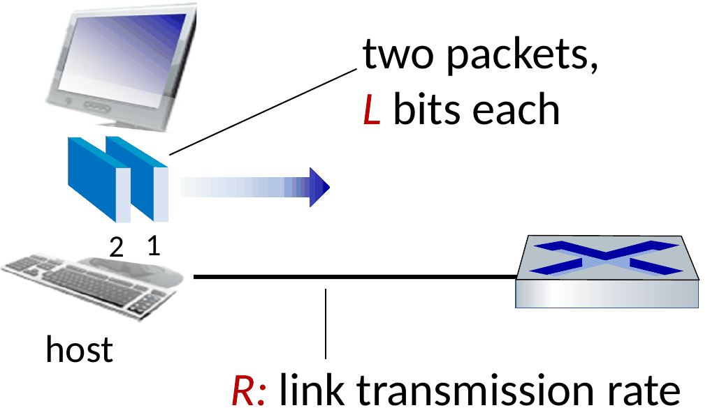
Your Turn: How Long?
Example: A 1500-byte packet is pushed onto a 100 Mbps link. How long does the transmission take?
Solution: \(L = 1500 \times 8 = 12{,}000\) bits.
\[d_{\text{trans}} = \frac{12{,}000}{100 \times 10^{6}} = 1.2 \times 10^{-4}\ \text{s} = 0.12\ \text{ms}\]
Same packet on 54 Mbps Wi-Fi: \(d_{\text{trans}} = 0.22\) ms.
Note what is missing from this formula: distance. Hold that thought until Section 1.4.
Physical Media: Guided
A bit propagates between transmitter/receiver pairs; the physical link is whatever lies between them.
Guided media — signals travel in a solid:
- Twisted pair (TP): two insulated copper wires. Cat 5: 100 Mbps / 1 Gbps Ethernet. Cat 6: 10 Gbps.
- Coaxial cable: two concentric conductors, bidirectional, hundreds of Mbps per frequency channel.
- Fiber optic: glass carrying light pulses, one pulse per bit. Tens to hundreds of Gbps, very low error rate, immune to electromagnetic noise, repeaters spaced far apart.
Physical Media: Wireless
Unguided media — the signal propagates freely in the electromagnetic spectrum. No wire, broadcast, and half-duplex.
Propagation is at the mercy of the environment: reflection, obstruction by objects, interference from other transmitters.
| Radio link type | Typical rate |
|---|---|
| Terrestrial microwave | up to 45 Mbps per channel |
| Wireless LAN (Wi-Fi) | hundreds of Mbps |
| Wide-area cellular (4G) | tens of Mbps |
| Satellite | 45 Mbps per channel, 270 ms end-to-end |
Why It Matters: Satellite
A geostationary satellite sits 35,786 km up. The signal must go up and back down — twice for a round trip.
Vote — can better hardware fix the 270 ms delay?
A. Yes, with a faster modem
B. No
B. That delay is distance divided by the speed of light. No engineering removes it — which is exactly why Starlink flies at 550 km instead of 35,786 km.
Activity: Rate Your Link
Everyone — 5 minutes, phone or laptop
- Run a speed test on campus Wi-Fi. Record down/up in Mbps.
- Turn Wi-Fi off and repeat on cellular.
- Post both numbers.
Then, as a room: which link is shared, and how can you tell from the numbers alone? Whose number is the outlier, and where are they sitting?
Section 1.3
The Network Core
Today’s Plan
- Packet switching: store-and-forward, queueing, loss
- Forwarding vs routing — the two core functions
- Circuit switching, FDM and TDM
- Why the Internet chose packets
- Internet structure: how a network of networks gets built
The Network Core
A mesh of interconnected routers.
Packet switching:
- hosts break messages into packets
- routers forward them link by link
- each packet goes at full link capacity
No reservation, no setup, no promise.
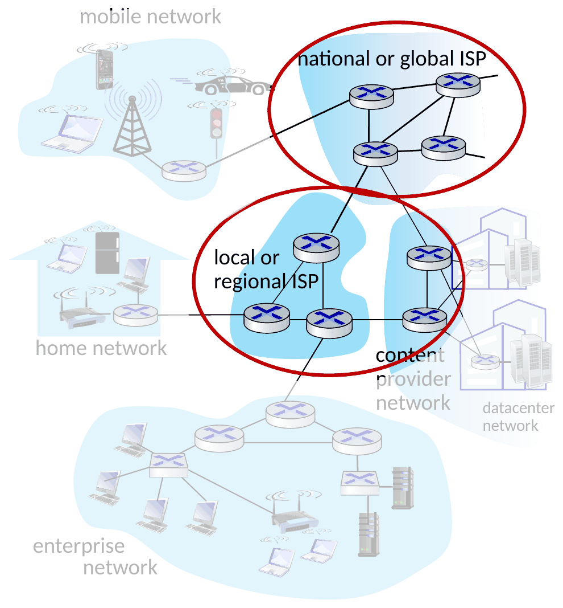
Store and Forward
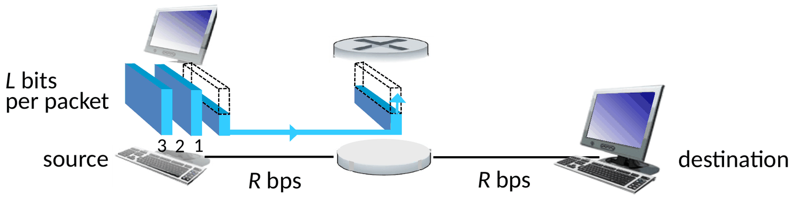
Store and forward: the router must receive the entire packet before it can start transmitting on the next link.
So a one-hop path costs \(L/R\), and a two-link path costs \(2L/R\) (ignoring propagation for now).
Store and Forward
Example: \(L = 10\) Kbits, \(R = 100\) Mbps.
\[d_{\text{trans}} = \frac{10 \times 10^{3}}{100 \times 10^{6}} = 10^{-4}\ \text{s} = 0.1\ \text{ms per hop}\]
End-to-end over two links: \(2L/R = 0.2\) ms.
Why store-and-forward, and not just relay bit by bit?
Because the router has to read the destination address in the header — and it cannot trust a packet it has not fully received and error-checked.
Your Turn: Three Hops
Example: A 1000-byte packet crosses 3 links, each 2 Mbps. Propagation is negligible. What is the end-to-end delay?
Solution: \(L = 1000 \times 8 = 8000\) bits.
\[\frac{L}{R} = \frac{8000}{2 \times 10^{6}} = 4\ \text{ms per link} \qquad d_{\text{end-end}} = 3 \times 4 = 12\ \text{ms}\]
In general, for \(N\) links of equal rate: \(d_{\text{end-end}} = N \cdot L/R\).
Queueing and Loss
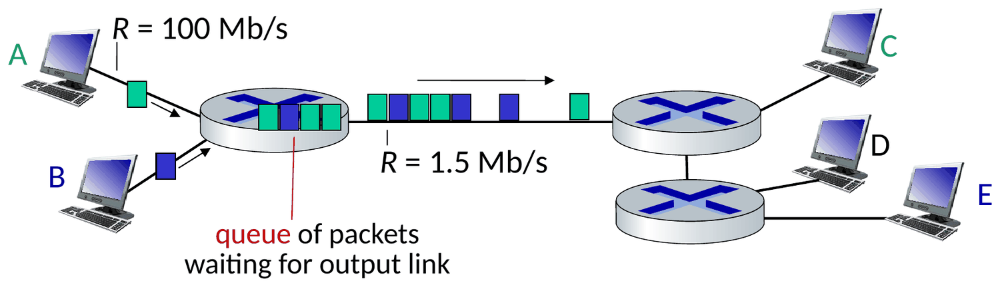
If the arrival rate to a link exceeds its transmission rate for a while:
- packets queue, waiting their turn on the output link
- packets are dropped if the router’s buffer fills up
Forwarding vs Routing
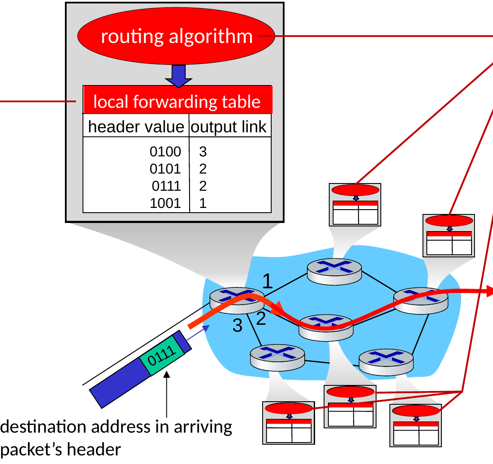
Forwarding is local: move an arriving packet from an input link to the right output link. One router, one packet, microseconds.
Routing is global: determine the source-to-destination paths packets take. All routers, all destinations, seconds to minutes.
Routing algorithms write the forwarding table; forwarding reads it. Chapters 4 and 5.
Circuit Switching
End-to-end resources are allocated to and reserved for a “call.”
Each link here has four circuits. This call holds the 2nd circuit on the top link and the 1st on the right link.
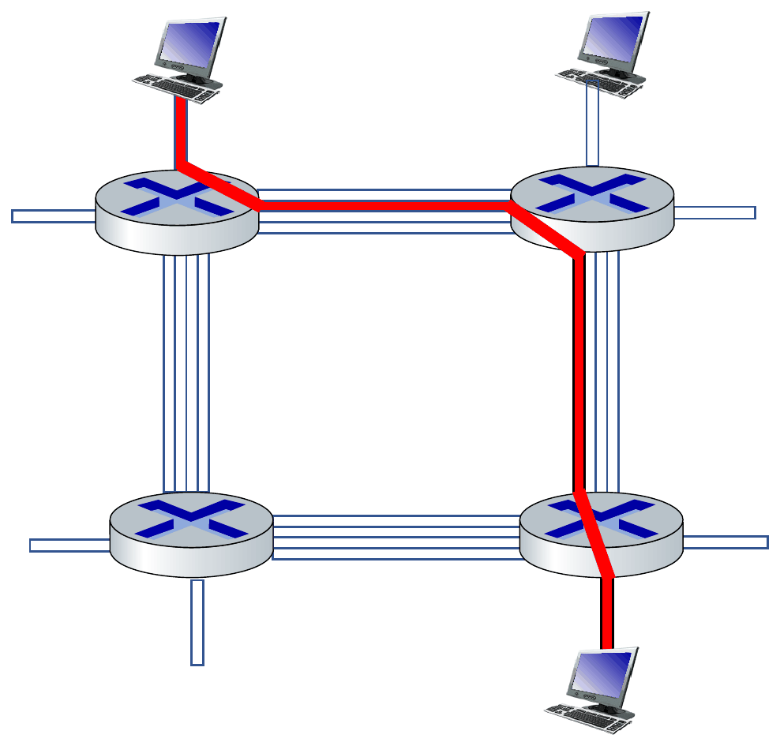
Circuit Switching
- Dedicated resources: no sharing.
- Guaranteed, circuit-like performance.
- A circuit sits idle when the call is silent — and nobody else may use it.
- Commonly used in traditional telephone networks.
That third point is the whole argument against circuit switching: you pay for capacity whether or not you use it.
FDM and TDM
Frequency division multiplexing
- the spectrum is cut into narrow bands
- each call owns one band
- it may transmit continuously, at that band’s rate
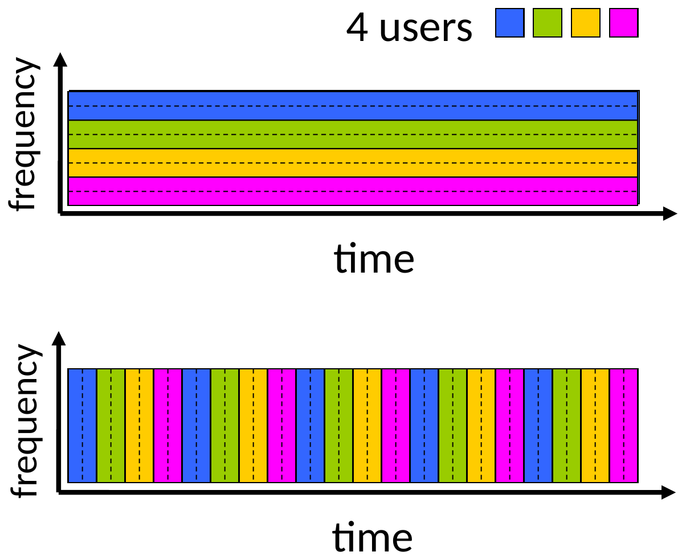
FDM and TDM
Time division multiplexing
- time is cut into slots
- each call gets periodic slots
- it may use the whole band, but only during its own slots
Either way, the reservation is static. A silent call still owns its band or its slot.
Packet or Circuit?
Vote — which switching style does each system use?
| System | Answer |
|---|---|
| A 1990s landline phone call | circuit |
| A Zoom call today | packet |
| A reserved lane on a toll road | circuit |
| A restaurant that takes walk-ins | packet |
| A restaurant that takes reservations | circuit |
| Netflix streaming | packet |
Packet Beats Circuit
Setup: a 1 Gbps link. Each user needs 100 Mbps when active, and is active 10% of the time.
Circuit switching: reserve 100 Mbps per user \(\;\Rightarrow\;\) 10 users, and that is the hard ceiling.
Packet switching: admit 35 users. The probability that more than 10 are active at once is less than 0.0004.
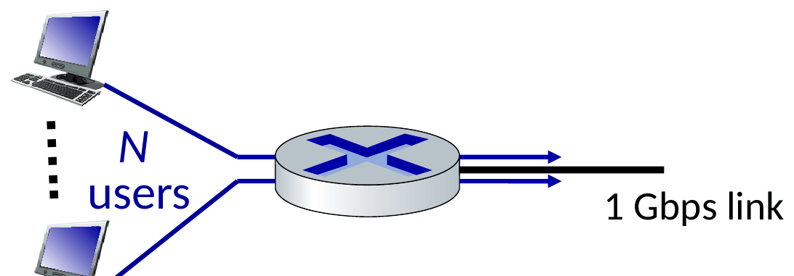
3.5\(\times\) the users, and overload roughly one second in 40 minutes.
Where 0.0004 Comes From
With \(N = 35\) independent users, each active with probability \(p = 0.1\), the number active is binomial:
\[P(\text{more than 10 active}) \;=\; \sum_{k=11}^{35} \binom{35}{k} (0.1)^{k}(0.9)^{35-k}\]
\[= 0.000424 \;<\; 0.0004\ \text{(rounded up in the text)}\]
And if we admit far more than 35?
\(N = 50 \Rightarrow 0.0094\). \(N = 100 \Rightarrow 0.42\). The guarantee degrades fast — statistical multiplexing is a bet, not a proof.
Your Turn: Size the Link
Example: A 10 Mbps link. Each user needs 1 Mbps when active and is active 20% of the time. How many users under each scheme?
Solution: Circuit switching: \(10 / 1 = \mathbf{10}\) users.
Packet switching with 25 users:
\[P(\text{more than 10 active}) = \sum_{k=11}^{25}\binom{25}{k}(0.2)^k(0.8)^{25-k} = 0.0056\]
25 users, with about a 0.6% chance of congestion — 2.5\(\times\) the circuit-switched capacity.
Is Packet Switching Perfect?
Where it wins:
- great for bursty traffic — sometimes data to send, often not
- resource sharing
- simpler: no call setup
Where it hurts:
- congestion is possible: delay and loss from buffer overflow
- needs extra protocols for reliable transfer and congestion control
So how do we get circuit-like guarantees on a packet network?
Activity: Human Network
Whole room — 10 minutes
- Four students stand in a line: source, R1, R2, destination.
- The source writes a message on four sticky notes, numbered 1–4.
- Rule: a router may pass a note along only after it has fully read it. Count “one-thousand-one” while reading. That is \(L/R\).
Activity: Human Network
Now break it, one change at a time:
- Give R1 two sources at once. Watch the queue form in their hand.
- Cap R1’s hand at two notes. The third one dropped is loss.
- Deliver note 3 before note 2. Who has to fix that, and where?
You have now demonstrated queueing delay, packet loss, and reordering — the three things Chapter 3 spends a hundred pages repairing.
Network of Networks
Question: given millions of access ISPs, how do we connect them?
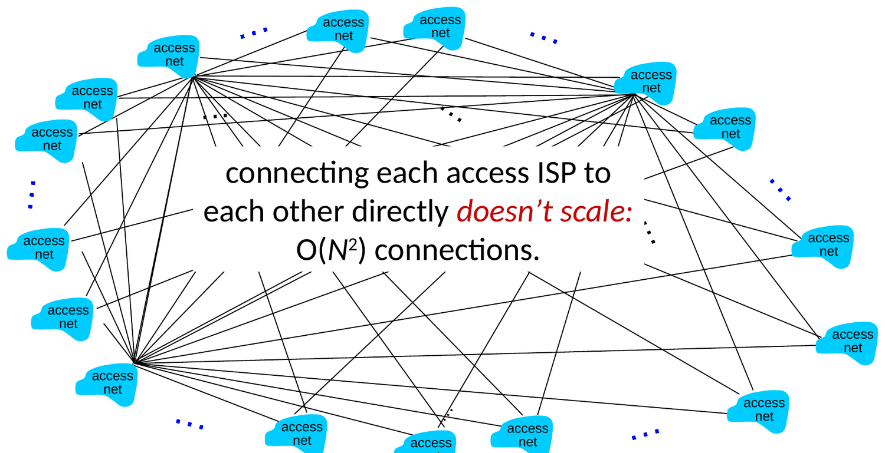
Connecting every pair directly does not scale: \(O(N^{2})\) links.
Network of Networks
Option: connect every access ISP to one global transit ISP.
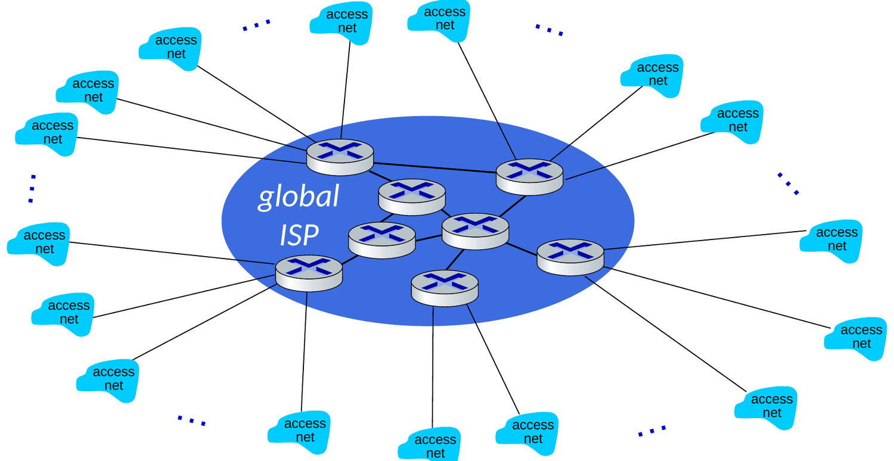
Now it is \(O(N)\). Customer and provider ISPs sign an economic agreement — the customer pays for transit.
Network of Networks
If one global ISP is a viable business, there will be competitors — and they will want to interconnect.
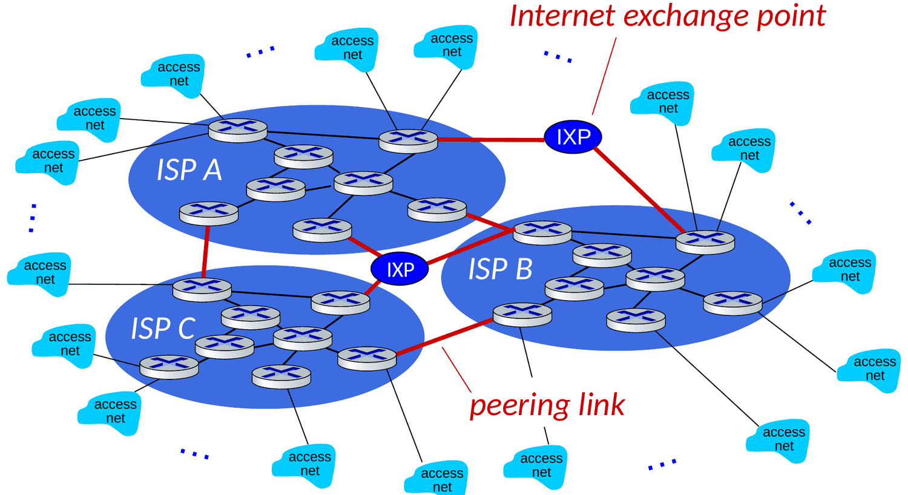
They meet at Internet exchange points (IXPs) over peering links — often settlement-free, since both sides benefit.
Network of Networks
Regional ISPs arise to aggregate access networks in one geography.
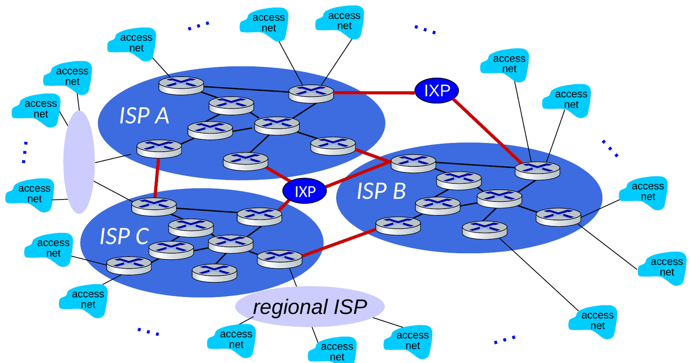
The hierarchy is now three deep: access \(\rightarrow\) regional \(\rightarrow\) global.
Network of Networks
Content provider networks (Google, Microsoft, Akamai, Netflix) build their own backbones to put content close to users.
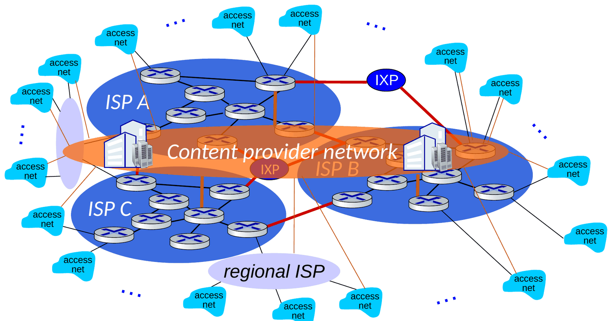
They bypass the tier-1 ISPs wherever they can — less money paid out, and fewer hops of delay for you.
Tier-1 ISPs
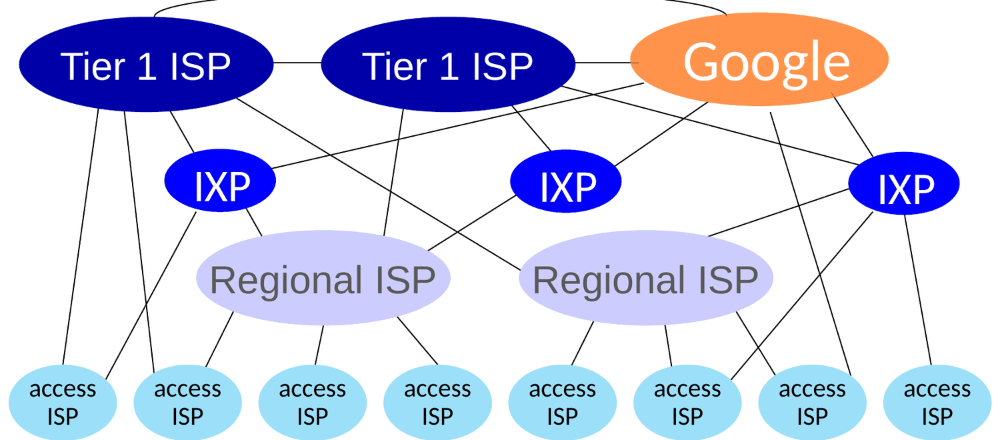
At the “center”: a small number of very well-connected large networks.
Tier-1 ISPs
Tier-1 commercial ISPs — Lumen/Level 3, Sprint, AT&T, NTT. National and international coverage, and they peer with each other rather than buying transit.
Content provider networks — Google, Meta. Private networks linking their own data centers, often bypassing tier-1 and regional ISPs entirely.
Both sit at the center, but for different reasons: one sells reachability, the other refuses to buy it.
A Real Tier-1 Map
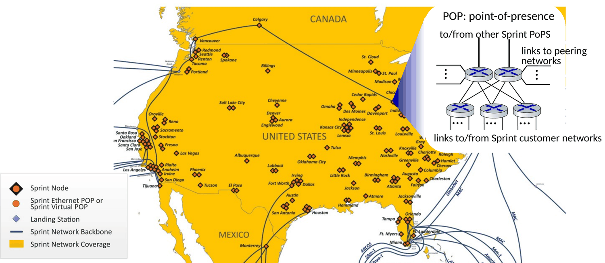
Sprint’s North American backbone, 2019. Diamonds are PoPs — points of presence, where customer and peer networks attach.
Why It Matters: Peering
Netflix is roughly 15% of North American downstream traffic. It could buy transit from a tier-1 ISP and pay per bit.
Vote — what did they build instead?
A. A bigger transit contract
B. Their own network + caches inside ISPs
B. Open Connect puts a cache box inside your ISP. Your stream never crosses a tier-1 link. The Internet’s shape is set by economics at least as much as by engineering.
Section 1.4
Delay, Loss, and Throughput
Today’s Plan
- Where delay and loss actually come from
- The four sources of nodal delay
- Transmission vs propagation — the distinction that trips everyone
- Traffic intensity \(La/R\)
- Measuring a real path with
traceroute - Throughput and the bottleneck link
Where Delay Comes From
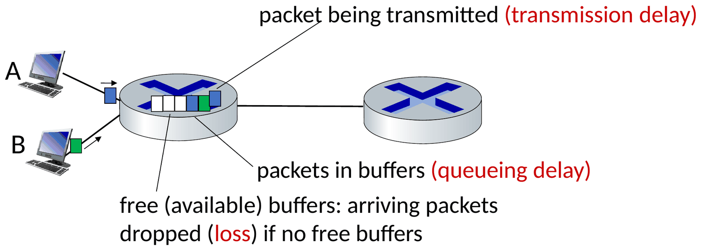
Packets queue in router buffers, waiting their turn on the output link. When the arrival rate exceeds the output capacity, the queue grows — and when the buffer is full, packets are lost.
Four Sources of Delay
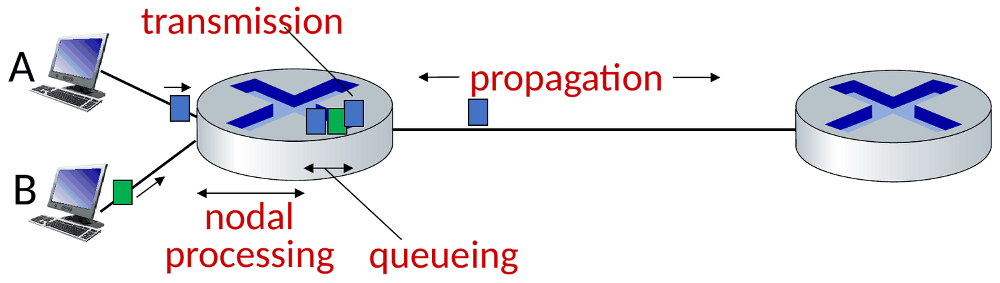
\[d_{\text{nodal}} = d_{\text{proc}} + d_{\text{queue}} + d_{\text{trans}} + d_{\text{prop}}\]
\(d_{\text{proc}}\) — nodal processing: check bit errors, pick the output link. Typically < 1 ms.
\(d_{\text{queue}}\) — queueing: waiting at the output link. Depends on congestion; the only one that varies wildly.
Four Sources of Delay
\(d_{\text{trans}}\) — transmission delay
- \(L\): packet length (bits)
- \(R\): link rate (bps)
\[d_{\text{trans}} = \frac{L}{R}\]
Time to push the packet out.
\(d_{\text{prop}}\) — propagation delay
- \(d\): length of the link (m)
- \(s\): propagation speed (\(\approx 2 \times 10^{8}\) m/s)
\[d_{\text{prop}} = \frac{d}{s}\]
Time for a bit to travel.
Very different: \(d_{\text{trans}}\) depends on the packet, \(d_{\text{prop}}\) does not.
Your Turn: Which Dominates?
Example: A 1500-byte packet on a 100 Mbps link that is 3,000 km long (\(s = 2 \times 10^{8}\) m/s). Which delay dominates?
Solution:
\[d_{\text{trans}} = \frac{12{,}000}{10^{8}} = 0.12\ \text{ms} \qquad d_{\text{prop}} = \frac{3 \times 10^{6}}{2 \times 10^{8}} = 15\ \text{ms}\]
Propagation wins by 125\(\times\). Upgrading that link to 1 Gbps takes the total from 15.12 ms to 15.01 ms — a 0.7% improvement.
The Caravan Analogy
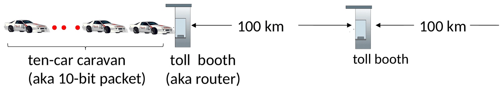
- Cars propagate at 100 km/hr; the toll booth takes 12 s per car.
- car \(\approx\) bit, caravan \(\approx\) packet, toll booth \(\approx\) router.
How long until the caravan is lined up at the 2nd booth?
The Caravan Analogy
Solution: Two pieces, exactly like \(d_{\text{trans}}\) and \(d_{\text{prop}}\).
Push the whole caravan through the booth: \(12 \times 10 = 120\) s.
Last car propagates 100 km at 100 km/hr: \(1\) hr \(= 3600\) s.
\[120 + 3600 = 3720\ \text{s} = \mathbf{62\ minutes}\]
The Caravan Analogy
Example (continued): Now cars propagate at 1000 km/hr and the booth takes 1 minute per car.
Will cars reach the 2nd booth before all are serviced at the 1st?
Solution: Yes. The first car is serviced at \(t = 1\) min, then propagates \(100/1000\) hr \(= 6\) min, arriving at \(t = 7\) min.
At \(t = 7\) min the booth has serviced 7 cars — 3 are still queued. The packet is spread across both links at once. Store-and-forward routers cannot do this; they must wait for the whole packet.
Traffic Intensity
- \(R\): link bandwidth (bps)
- \(L\): packet length (bits)
- \(a\): average packet arrival rate
\[\text{traffic intensity} = \frac{La}{R}\]
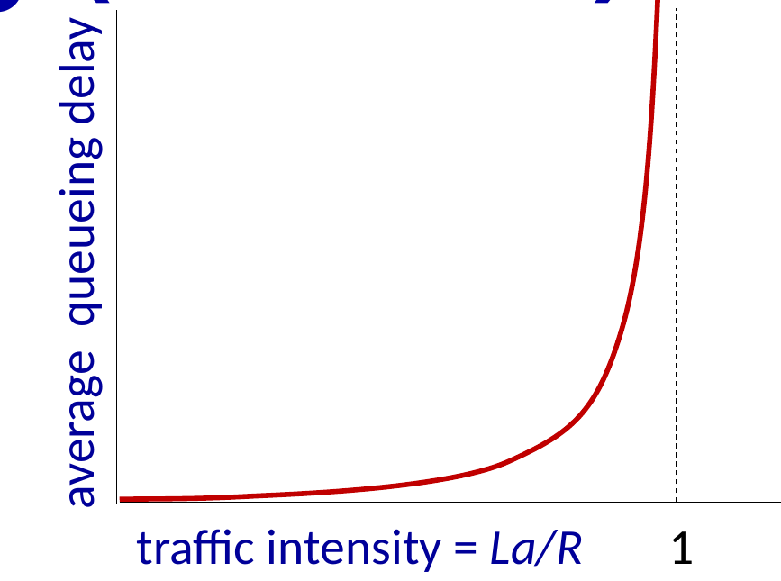
Traffic Intensity
- \(La/R \approx 0\): average queueing delay is small.
- \(La/R \rightarrow 1\): average queueing delay grows without bound.
- \(La/R > 1\): more work arrives than can be served — the average delay is infinite.
Notice that the bad case is not “the link is full.” It is “the link is almost full,” which happens far more often.
Your Turn: How Busy?
Example: \(L = 1000\) bits, \(R = 1\) Mbps. Compute \(La/R\) for \(a = 500\), \(800\), and \(1200\) packets/sec.
| \(a\) (pkt/s) | \(La/R\) | Verdict |
|---|---|---|
| 500 | 0.5 | comfortable |
| 800 | 0.8 | queues noticeably |
| 1200 | 1.2 | unbounded — loss |
Design rule: engineer links to run well below 1, not just below it. The curve is nearly vertical near the end.
Packet Loss
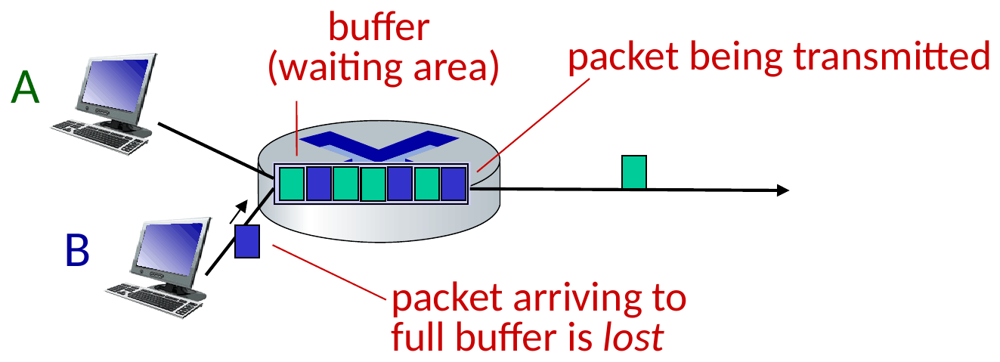
- The queue (buffer) ahead of a link has finite capacity.
- A packet arriving to a full queue is dropped.
- It may be retransmitted by the previous node, by the source, or not at all.
Real Delays: traceroute
traceroute measures delay to each router along a path.
For each hop \(i\):
- send three packets that will reach router \(i\) (time-to-live \(= i\))
- router \(i\) returns them to the sender
- the sender measures the elapsed interval
Three probes per hop, so you see three numbers per line. * * * means no response — the probe was lost, or that router declines to reply.
Real Delays: traceroute
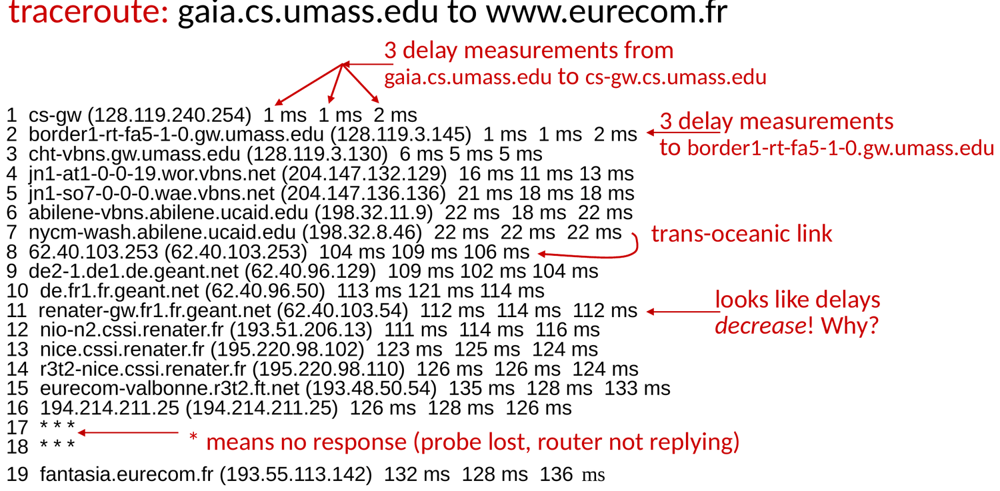
Hop 11 reports 112 ms, hop 12 reports 111 ms. Delays decreased. Why?
Each line is an independent round trip at a different instant, with different queueing. Samples, not a cumulative sum.
Activity: Trace Your Path
Everyone — 8 minutes, terminal
Record: hop count and minimum RTT for each destination.
As a room:
- What is the smallest RTT anyone got to Sydney?
- San Antonio to Sydney is ~14,000 km. At \(2\times10^{8}\) m/s the round trip alone is 140 ms. Did anyone beat that?
Throughput
Throughput: the rate (bits/time) at which bits are delivered from sender to receiver.
- instantaneous: rate at a given moment
- average: rate over a longer period
The fluid-in-a-pipe picture: the server pours bits in, and each link is a pipe of a given diameter.
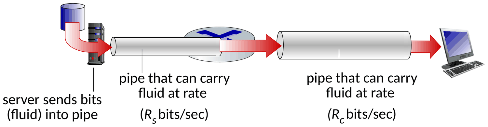
The Bottleneck Link
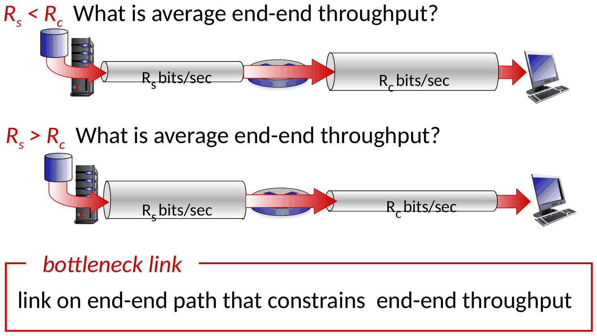
Average end-to-end throughput is \(\min(R_s, R_c)\) — the bottleneck link constrains the whole path.
Sharing the Backbone
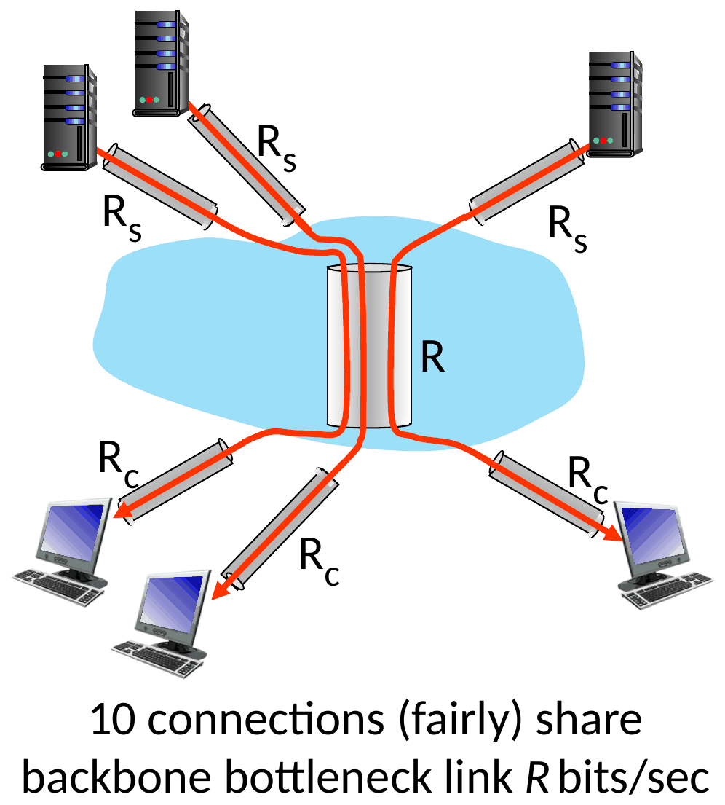
Ten connections fairly share a backbone link of rate \(R\).
\[\text{per-connection} = \min\!\left(R_c,\, R_s,\, \frac{R}{10}\right)\]
In practice \(R_c\) or \(R_s\) — the access links — is the bottleneck, not the core. Backbones are over-provisioned; your Wi-Fi is not.
Your Turn: Movie Night
Example: Server link \(R_s = 100\) Mbps, your link \(R_c = 25\) Mbps, backbone \(R = 1\) Gbps shared by 10 connections. How long to download a 5 GB movie?
Solution: \(\min(100,\ 25,\ 1000/10) = \mathbf{25}\) Mbps.
\(5\ \text{GB} = 40 \times 10^{9}\) bits.
\[T = \frac{40 \times 10^{9}}{25 \times 10^{6}} = 1600\ \text{s} \approx 27\ \text{minutes}\]
Upgrading the server to 10 Gbps changes nothing. Fix the bottleneck or fix nothing.
Why It Matters: Latency
Your link is 1 Gbps and the round trip to the server is 100 ms.
Vote — how much data is “in flight” at any instant?
A. A few KB
B. About 12.5 MB
B. The delay \(\times\) bandwidth product:
\[0.1\ \text{s} \times 10^{9}\ \text{bps} = 10^{8}\ \text{bits} = 12.5\ \text{MB}\]
A 1 MB file fits entirely inside one round trip — so its transfer time is dominated by the RTT, not the rate. Chapter 3 lives on this number.
Section 1.5
Layering and Service Models
Today’s Plan
- Why we need a structure at all
- Layering, by analogy with air travel
- The five-layer Internet protocol stack
- Encapsulation — how headers get added and removed
- The seven-layer OSI reference model
Networks Are Complex
Networks have many moving pieces: hosts, routers, links of various media, applications, protocols, hardware, software.
Is there any hope of organizing the structure of a network?
… or at least of organizing our discussion of networks?
The answer that the Internet’s designers reached — and that every large system has since copied — is layering.
Layers: Air Travel
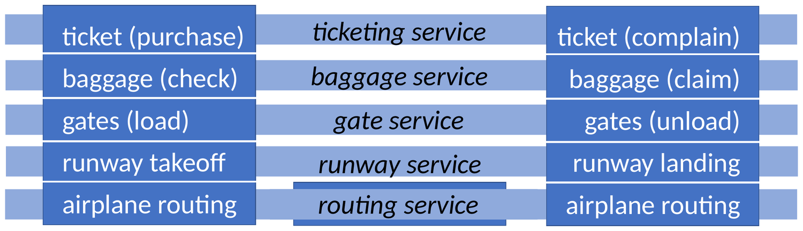
Each layer implements a service, using its own internal actions and relying on the services of the layer below.
Why Layering?
Dealing with complex systems:
- explicit structure lets us identify the pieces and their relationships
- a layered reference model gives us shared vocabulary
Modularization eases maintenance and updating:
- a change in a layer’s implementation is transparent to the rest of the system
- changing the gate procedure does not affect ticketing
Why Layering?
Cost — is layering ever harmful?
Yes. A layer that hides information the layer above needs makes the upper layer guess.
TCP treats every lost packet as a sign of congestion and slows down. On a wireless link, most losses are interference, not congestion — so TCP slows down for no reason.
The link layer knew the difference. The interface gave it no way to say so. Chapter 7 has the scars.
The Internet Stack
application — supports network apps. IMAP, SMTP, HTTP
transport — process to process. TCP, UDP
network — datagrams source to destination. IP, OSPF
link — between neighbouring elements. Ethernet, 802.11
physical — bits “on the wire.”
Spot the Layer
Vote — which layer does each belong to?
| Artifact | Layer |
|---|---|
GET /index.html HTTP/1.1 |
application |
| A port number, e.g. 443 | transport |
The address 129.7.1.20 |
network |
A MAC address 3c:22:fb:... |
link |
| Voltage levels on a Cat-6 pair | physical |
| A TCP sequence number | transport |
Encapsulation
Each layer takes the unit from above, adds its own header, and hands the result down. The receiver strips them in reverse.
Encapsulation
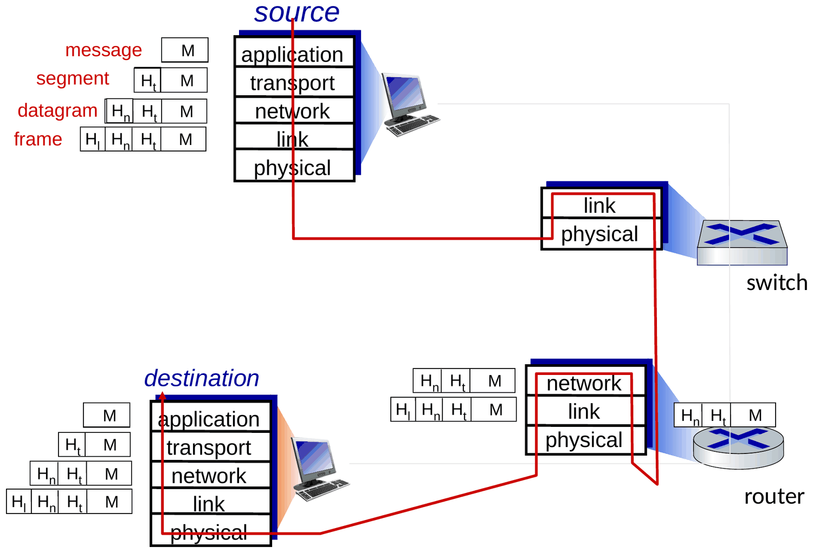
A switch touches only the link layer; a router goes up to the network layer. Neither ever opens \(M\).
Your Turn: Header Cost
Example: TCP adds 20 bytes, IP adds 20 bytes, Ethernet adds 18. What fraction of the frame is overhead for a 1000-byte payload? For a 40-byte one?
Solution: Total header \(= 20 + 20 + 18 = 58\) bytes.
\[\frac{58}{1058} = 5.5\% \qquad\text{vs}\qquad \frac{58}{98} = 59.2\%\]
This is why a chatty protocol that sends one keystroke per packet wastes most of the link, and why Chapter 3 bothers with Nagle’s algorithm.
The OSI Model
Two layers the Internet stack lacks:
presentation — interpret the meaning of data: encryption, compression, machine conventions.
session — synchronization, checkpointing, recovery.
If an application needs them, the application implements them.
Why It Matters: Modularity
You walk out of the building. Your phone drops Wi-Fi and joins 5G. Your video call keeps going.
Vote — which layers had to change?
A. All five
B. The bottom two (and an address)
B. 802.11 was swapped for a cellular link layer; the IP address changed. HTTP and the video codec never noticed.
That substitution works only because the interface between layers is narrow and written down.
Activity: Layer Relay
Five volunteers — 8 minutes
Each student is one layer. Pass a folded paper down the stack; each layer staples on a slip with its own header before passing it on.
- application writes the message
- transport adds a port number
- network adds source and destination IP
- link adds a MAC address
- physical walks it across the room
Activity: Layer Relay
Then run it up the receiving stack, stripping one slip per layer.
Ask each student the same two questions:
- What did you have to read?
- What did you deliberately ignore?
Answer 2 is the point. The network layer never looked at the port number, and the link layer never looked at the IP address.
Section 1.6
Networks Under Attack
Today’s Plan
- Why the Internet was not designed to be secure
- Malware, botnets, and DDoS
- Packet sniffing and IP spoofing
- Where the defences live
Networks Under Attack
The field of network security asks:
- how can attackers attack computer networks?
- how can we defend networks against attacks?
- how do we design architectures that are immune to attack?
The Internet was not originally designed with much security in mind.
Networks Under Attack
The original vision, in the designers’ own words:
“a group of mutually trusting users attached to a transparent network.”
Every word of that is now false. Users are not mutually trusting, and the network is anything but transparent.
Protocol designers have been playing catch-up ever since. Security considerations now appear at every layer.
Malware
Virus — self-replicating infection by receiving and executing an object, e.g. an email attachment.
Worm — self-replicating infection by passively receiving an object that then executes itself. No user action required.
Spyware — records keystrokes and sites visited, uploads to a collection site.
An infected host can be enrolled in a botnet and used for spam or distributed denial of service.
Denial of Service
DoS: make a resource unavailable to legitimate traffic by overwhelming it with bogus traffic.
- select a target
- break into hosts around the network (a botnet)
- flood the target from every compromised host
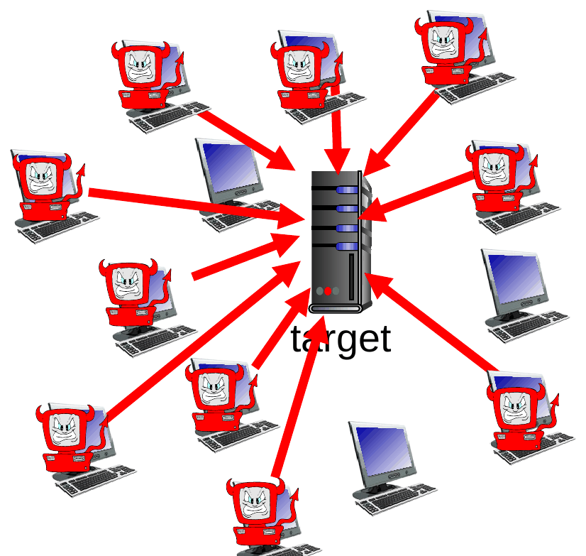
The “distributed” in DDoS is what makes it hard: there is no single source address to block.
Packet Sniffing
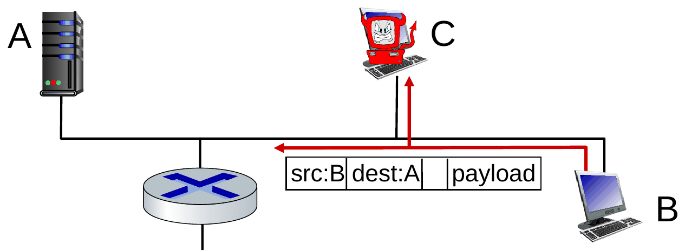
On broadcast media — shared Ethernet, wireless — a network interface in promiscuous mode reads and records every passing packet, passwords included.
Wireshark, which we use for the labs, is exactly this tool. It is defensive and offensive; which one depends only on whose network it is pointed at.
IP Spoofing
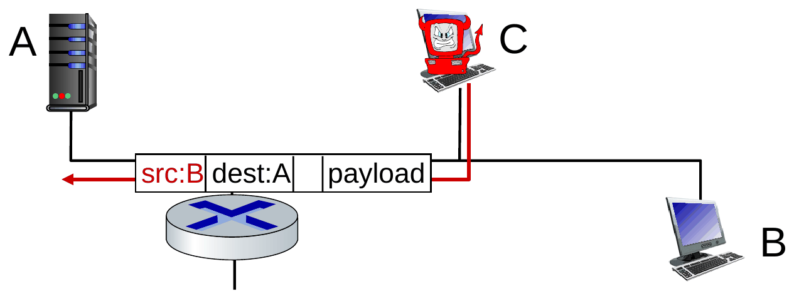
Nothing in IP verifies that the source address in a packet belongs to the sender. C can send a packet claiming to be B.
Every “call from your bank’s number,” every reflection/amplification attack, and every anonymous flood starts here. Chapter 8.
Spot the Attack
Vote — name the attack in each scenario.
| Scenario | Attack |
|---|---|
| Free airport Wi-Fi logs your passwords | sniffing |
| 50,000 cameras flood one web server | DDoS |
| Packets arrive claiming to be from you | IP spoofing |
| A PDF attachment installs a keylogger | virus / spyware |
| A server is compromised with no clicks | worm |
Why It Matters: Trust
The original design assumed mutually trusting users. Every attack on the last four slides exploits an assumption, not a bug.
Vote — could we have designed it securely in 1974?
A. Yes, they were careless
B. Not at that cost and scale
B, mostly. Public-key cryptography was published in 1976, and per-packet crypto was far beyond the hardware of the day. The design they did choose — simple, unverified, best-effort — is why the Internet scaled at all.
Wireshark
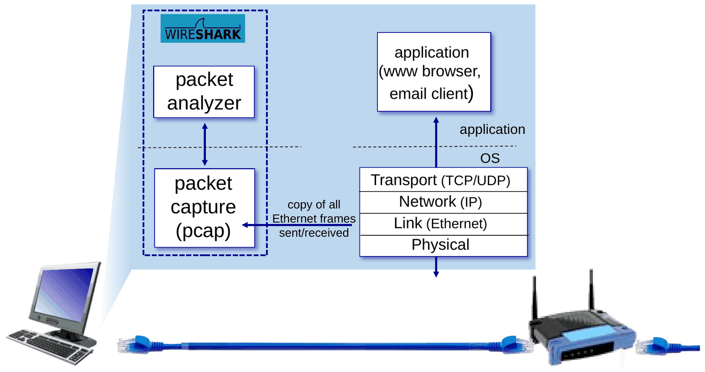
The packet capture library (pcap) takes a copy of every frame the interface sees; the packet analyzer parses it back up through the layers and shows you the headers we just drew by hand.
Section 1.7
A Short History
1961–1972
Early packet-switching principles
- 1961 Kleinrock: queueing theory shows packet switching is effective
- 1964 Baran: packet switching in military networks
- 1967 ARPAnet conceived at the Advanced Research Projects Agency
- 1969 first ARPAnet node operational
- 1972 ARPAnet public demo; NCP, the first host-to-host protocol; the first email program; 15 nodes
1972–1980
Internetworking, and proprietary networks
- 1970 ALOHAnet, satellite network in Hawaii
- 1974 Cerf and Kahn: an architecture for interconnecting networks
- 1976 Ethernet at Xerox PARC
- late 70s DECnet, SNA, XNA — proprietary architectures
- 1979 ARPAnet reaches 200 nodes
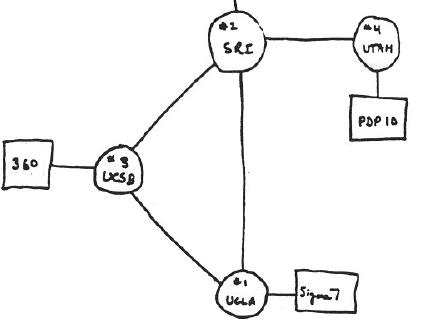
Cerf and Kahn’s Principles
- minimalism, autonomy — no internal changes required to interconnect networks
- best-effort service model — the network promises nothing
- stateless routers — no per-connection state in the core
- decentralized control — no single administrative entity
These four choices are today’s Internet architecture. Every performance problem in Chapters 3–7 is the price of one of them, and every scaling success is the payoff.
1980–1990
New protocols, a proliferation of networks
- 1982 SMTP email protocol defined
- 1983 deployment of TCP/IP
- 1983 DNS defined, for name-to-IP-address translation
- 1985 FTP protocol defined
- 1988 TCP congestion control
New national networks: CSnet, BITnet, NSFnet, Minitel. About 100,000 hosts connected.
1990s–2000s
Commercialization and the Web
- early 1990s ARPAnet decommissioned
- 1991 NSF lifts restrictions on commercial use of NSFnet
- early 1990s the Web: hypertext [Bush 1945, Nelson 1960s]; HTML and HTTP by Berners-Lee
- 1994 Mosaic, then Netscape
- late 1990s commercialization of the Web
More killer apps: instant messaging, P2P file sharing. Network security comes to the forefront. ~50 million hosts, backbone links at Gbps.
2005–Today
- ~18 billion devices attached (2017), and rising
- smartphones (iPhone, 2007), aggressive broadband deployment
- ubiquitous high-speed wireless: 4G/5G, Wi-Fi
- online social networks at billions of users
- service providers build their own networks — Google, Meta, Microsoft bypass the commercial Internet to sit close to you
- enterprises move to the cloud: AWS, Azure
Notice the direction of travel: the network gets flatter, and the content moves closer. That is Section 1.3’s economics, still running.
Activity: Predict 2035
In pairs — 5 minutes, then share
Every decade above was driven by one dominant force: research funding, then commercialization, then mobility, then content.
Name one force you think reshapes the Internet by 2035, and one property of today’s architecture it will strain.
Keep your answer. We will come back to it in Chapter 8 and see whether the architecture you named actually bends.
Chapter 1: Summary
We covered a great deal of ground:
- what the Internet is, in two views
- what a protocol is
- network edge, access networks, core
- packet vs circuit switching
- Internet structure
- performance: loss, delay, throughput
- layering and service models
- security
- history
You now have context, overview, vocabulary, and a feel for networking. Depth, detail, and considerably more fun to follow.
What’s Next
Chapter 2 — the Application Layer. We start at the top of the stack, where you already live: the Web and HTTP, DNS, email, P2P, and socket programming.
Two things to carry forward from today:
- Every question in this course reduces to who does what, at which layer, and what does it cost in delay.
- When something is slow, find the bottleneck before you optimize anything.

CSCI 4306 Computer Networks